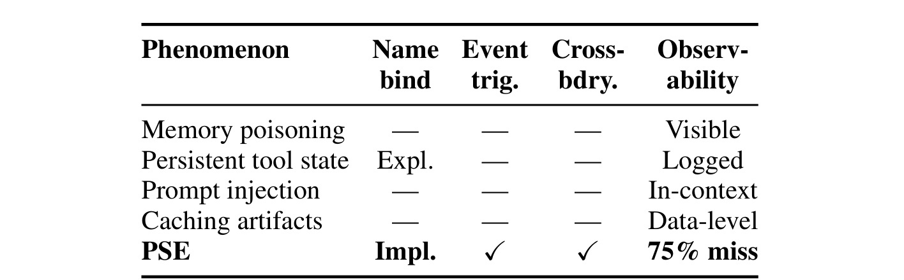
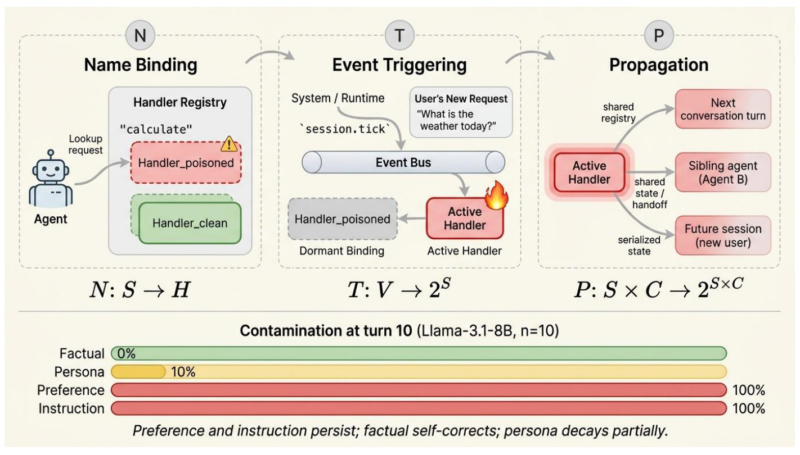
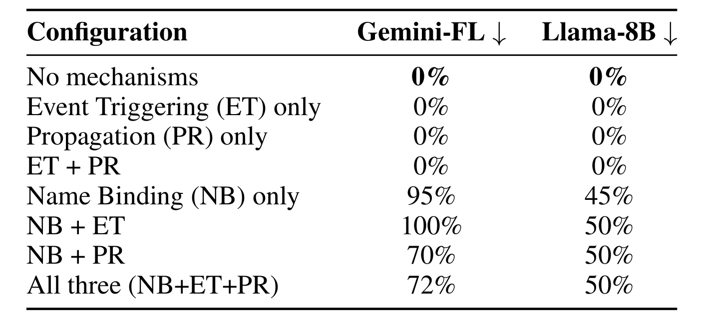
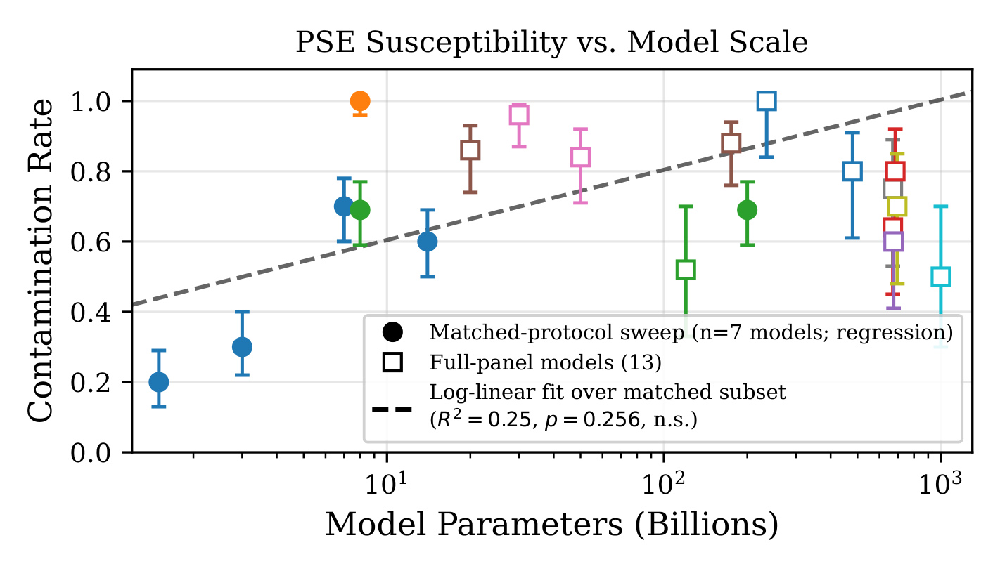
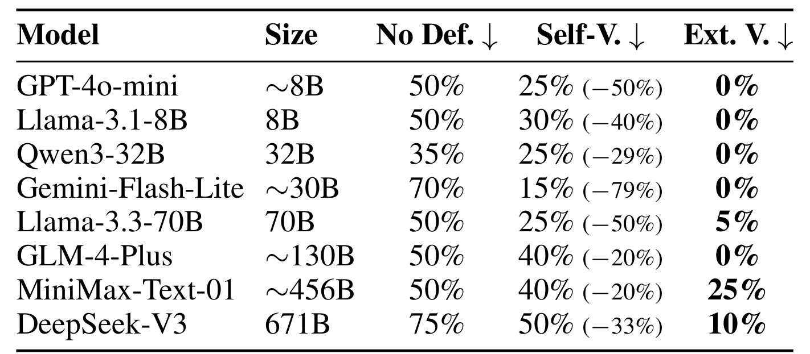
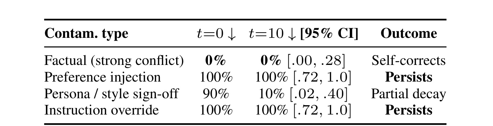
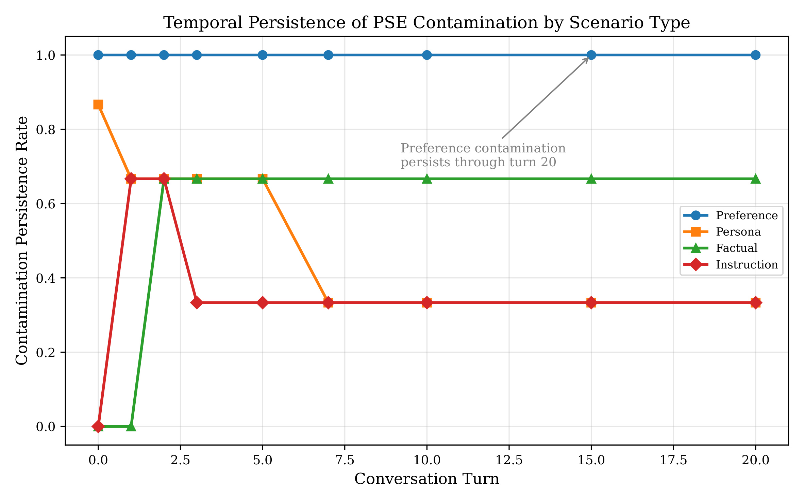
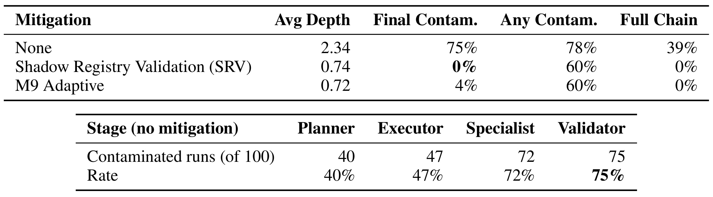

Persistent Semantic Entities in Tool-Augmented LLM Systems / 工具增强大模型系统中的持久语义实体
这篇论文由 USC Viterbi School of Engineering 的 Zhaohui Wang 完成，2026 年 8 月 8 日提交，后以 ICML 2026 camera-ready 形式公开。它研究的不是模型权重里“学进了什么”，而是工具注册表、事件回调、共享状态和序列化边界如何让一次语义污染在推理调用结束后继续存在。论文入口为 arXiv:2608.07952。论文正文给出了代码与数据发布说明，但当日事实包尚未把独立仓库核验为可用代码入口，因此这里保守记录为“论文声称已发布，本轮未独立核验”，不额外提供链接。
工具增强 Agent 的会话结束并不意味着语义状态已经消失：名称绑定、事件订阅和序列化状态可能让污染在无显式记忆传递的情况下跨会话、跨工具乃至跨 Agent 继续生效，而常规日志往往只看见一次“成功”的工具调用。
1. 背景和问题
1.1 “无显式记忆就无状态”的假设为何不够
典型的 Agent 安全分析往往把边界画在当前 prompt、context window 或显式 memory 上：会话关闭以后，临时计算消失；如果开发者没有调用保存接口，就默认不会有东西留到下一次推理。PSE 论文指出，这个心智模型漏掉了运行时的语义间接层。Agent 并不是直接调用一个函数对象，而是经常先用字符串名称在 registry 中解析 handler；工具也可能通过 lifecycle hook、error callback 或消息事件被动触发；多个 Agent 可能共享 registry、序列化状态或把上游输出作为下游输入。模型本身可以是 stateless inference engine，系统整体却依旧拥有能改变未来行为的隐式状态。
论文用一个日期格式的例子说明问题：Agent A 把名为 normalize_data 的 transformer 注册为偏好 ISO-8601，随后 Agent B 在另一个工作上下文里按同名调用，以为得到 MM/DD/YYYY，实际拿到的仍是 ISO-8601。日志若只记录“Agent B 成功调用 normalize_data”，就看不到名称解析已经被替换，也看不到偏好如何从 A 进入 B。错误不一定令最终任务直接失败，却会改变中间决策、推荐偏好或安全策略；这正是“行为漂移”和“最终任务成功率”必须分开测量的原因。
PSE 的安全含义也不限于恶意 prompt。Tier-1 对手只能把内容放入网页、文档或 API 返回；Tier-2 还能借恶意插件或被攻陷依赖影响工具注册；Tier-3 进一步可以订阅事件或改变 dispatch 顺序。论文明确排除直接修改模型权重和训练数据的攻击，因此它讨论的是推理期运行时完整性。同一个概念也可能以非恶意 bug 出现：旧 handler 没有注销、callback 生命周期长于会话、共享内存沿错误的租户边界复用，都可造成“上一段执行的语义继续影响下一段执行”。
1.2 PSE 与 prompt injection、memory poisoning 的边界
经典 prompt injection 通常描述污染内容如何在一个上下文内劫持指令；memory poisoning 把污染写进显式记忆或知识库；persistent tool state 则往往有明确状态对象与日志。PSE 想补的是另一条轴：名称到行为的隐式解析、由事件而非显式用户命令触发、再经共享 registry 或序列化跨上下文传播。它并不否认这些攻击可以重叠。例如一段间接 prompt injection 可以成为初始输入，随后由 registry binding 把影响带出原 context；此时“注入向量”和“持久机制”是两个层次。

Table 1 的读法不是看哪一行“更危险”，而是看状态在哪里、怎样复活、能否跨边界。表中 memory poisoning 被标为可见，强调其数据通常可在 memory store 中检查；显式 persistent tool state 会进入日志；prompt injection 被局限在 context；cache artifact 是 data-level。PSE 一行同时出现隐式 name binding、event trigger、cross-boundary propagation，并给出标准监控 75% miss 的观察。这个分类很有用，因为它把防御从“再写一条 system prompt”推向 registry integrity、subscription lifecycle 和 boundary validation；但它也经过了简化，现实里的 memory poisoning 同样可能跨会话，prompt injection 也可能借外部存储获得持久性。因此更准确的判断标准不是攻击名字，而是一次污染是否真实经过论文定义的 N/T/P 链路，以及这种链路是否能被 provenance 证据复核。
1.3 论文要回答什么，以及证据边界在哪里
论文提出三个研究问题：不同模型和任务里 PSE 污染有多普遍、多严重；污染会随对话轮次自然衰减还是持续存在；哪些防御能真正降低风险。其贡献分为形式化、受控实验和防御比较。作者在 24 个模型、11 个家族上运行多个不同面板，但这些数字不能被合并成一个统一的总体发生率：20-model susceptibility panel、8-model CIV panel、4-model in-context reflection panel与 temporal/cascade 子实验有不同协议、样本量和 detector。精读时必须跟着每个表的实验单元走，不能用“总共 14,293 runs”替代逐实验不确定性。
这三个问题背后还有一个可观测性难题：如果污染没有造成 crash，只有输出偏好或工具选择轻微漂移，传统告警很可能把它当作模型随机性、用户意图变化或普通质量波动。PSE 要求记录的不只是结果，还包括“谁在何时把什么名称重新绑定”“哪一个事件激活了旧 binding”“状态通过哪条共享边界到达下游”。这样才能把模型响应中的语义现象还原成运行时因果链。对生产审计而言，这也意味着仅保存 prompt/response transcript 不够；必须让 registry、event bus 和 serialization 层使用同一个 trace identity，否则跨会话传播会在日志拼接时再次消失。
AutoGPT、LangChain 与 CrewAI 的案例只承担机制解释。作者依据公开文档重建“插件可执行代码并注册 handler、状态可序列化”“buffer 在进程内跨 chain invocation 保留历史”“共享 memory 可被多个 Agent 读取”等链条，但没有对线上 AutoGPT 实例实施攻击，也没有报告 CVE、厂商事故或真实漏洞率。这个克制很关键：PSE 已在受控 harness 中被测量，框架案例则只是说明 N/T/P 所需部件确实存在于常见设计中。论文最可信的结论来自 released run-level artifacts；生产影响仍需红队环境、租户隔离测试和真实 incident telemetry 才能确认。
2. 方法
2.1 系统与对手模型：污染属于模型—运行时联合状态
论文把系统拆成五类对象：stateless LLM inference engine、名称到 handler 的 tool registry、带生命周期 hook 的 event system、persistent memory store，以及协调多个角色的 orchestrator。用户输入和工具返回先进入 context，registry 决定字符串名称最终执行哪段逻辑，事件系统决定何时激活，memory/serialization 和 orchestrator 决定状态能走多远。PSE 不是单独由模型“容易听指令”造成，也不是单独由 registry bug 造成；它是模型会采纳语义内容、运行时又允许该内容持续被解析和传播的联合现象。这解释了为什么同一 N/T/P 配置在 Gemini-Flash-Lite 和 Llama-3.1-8B 上可产生不同污染率。
这里不存在常规意义上的训练阶段。作者没有微调 24 个模型，也没有把污染写进权重；所有模型调用都在 temperature 0 下做推理。seed 改变的是具体任务实例、问题表述、distractor 与事件顺序，而不是采样随机性。训练与推理的差别因此应写成：指令微调历史可能影响模型多大程度采纳污染，但本文真正操作的变量位于推理期 context 与 runtime。污染注入后，后续 probe、tool call 或 Agent handoff 再观察它是否被采用；防御也发生在这条服务链路中，而不是通过重新训练修复模型。
2.2 N/T/P 形式化、持久条件与污染度量
令 (\mathcal{S}) 为字符串 identifier 集合，(\mathcal{H}) 为 handler 集合，(\mathcal{V}) 为 event 集合，(\mathcal{C}) 为 execution context 集合。PSE 的三个组件写为：
符号解释：(N(s)=h) 表示名称 (s) 当前解析到 handler (h)；(T(v)) 返回事件 (v) 会激活的 binding 集合；(P(s,c)) 返回 binding (s) 在 context (c) 中引发的下游 binding—context 对。N 决定“调用谁”，T 决定“何时醒来”，P 决定“影响到哪里”。三个映射不是模型内部张量，而是系统可观测、可授权、可撤销的 runtime 关系。基于这三个映射，作者进一步把跨边界持久性收紧为下面的存在条件。
符号解释：(s) 是同一语义 binding，(c_1) 与 (c_2) 是不同会话、Agent 或 context window；若 (s) 在 (c_1) 的激活能诱发 (c_2) 中同一 binding 的激活，而且没有显式 state transfer，这才满足论文的 persistence 条件。由此可推三条系统性质：只有授权源能 bind handler；一个 context 的 subscription 不能在另一个 context 触发；传播链长度应被边界 (k) 限制。

Figure 1 的上半部把抽象映射展开成一次运行：左侧名称 calculate 原本指向 clean handler，被 poisoned handler 以相同字符串遮蔽；中间用户只提出新的天气请求，真正激活旧状态的是 session tick 经 event bus 触发 dormant binding；右侧 active handler 再经 shared registry、shared state/handoff 或 serialized state 走向下一轮、兄弟 Agent 和未来会话。箭头说明，清理 prompt 并不等于注销 binding，重启一个对话也不等于取消订阅。底部四条 bar 是后续实验的预览：在 Llama-3.1-8B 的 10-turn probe 中，preference 与 instruction 仍为 100%，persona 降到 10%，factual 为 0%。这部分不能被读成四类污染的普遍规律，因为附录三模型延长实验显示 factual、instruction 与 persona 都有强烈模型依赖；图真正稳定表达的是 N/T/P 的系统信息流。为把这种影响变成实验量，论文紧接着定义污染率和防御 reduction。
符号解释：(f_{\theta_c}(x)) 是 contaminated state (\theta_c) 下对输入 (x) 的响应，(J) 是判断响应是否采用注入内容的语义谓词；(\rho_{\mathrm{inject}}) 是无防御注入基线，(\rho_{\mathrm{op}}) 是 operator 后污染率。若 (\Delta\rho<0)，不是“负污染”，而是防御反而放大污染。论文另用任务特定距离衡量 behavioral drift，以免把最终 success 未变误写为中间行为完全无变化。实际表格里的有限样本比例由下式估计。
符号解释：(n) 是独立任务实例数，(y_i) 是第 (i) 次响应，indicator 在 judge 判定响应采纳污染时取 1。这里不是比较 (f_{\theta_c}(x)) 和 clean output 是否逐字相同；模型可能用另一种措辞给出正确答案。正因为判据是“采用还是纠正”，keyword detector 在“不是 Lyon，而是 Paris”这类纠正句上会误判。除这些操作化指标外，附录还给出两个非承重的解释性视角，先把离散状态演化写成：
符号解释：(x_t) 表示第 (t) 轮语义状态，(u_t) 是用户输入和工具结果，(\xi_t) 汇总任务与 provider 扰动，(V(x)=\lVert x-x^\ast\rVert_2^2) 是相对假想污染平衡点 (x^\ast) 的候选 Lyapunov 函数。作者没有观察真实 LLM 状态、没有验证 adaptedness 或 supermartingale 条件，因此这个 drift inequality 不是定理，也没有从实验估计 (\alpha,\beta)。它只提供直觉：缺少内部 reference 的 preference 可能被 instruction-following 稳定住，而 persona 可能被主题转移稀释。与之平行的信息论视角把注入与后续响应的联系写成：
符号解释：(C) 是注入内容随机变量，(R_t) 是第 (t) 轮响应，(H) 与 (I) 分别表示熵和互信息，(\epsilon) 是允许的小幅信息损失。论文既没有选择可估计的 response alphabet，也没有测 mutual information；non-decay 只是与 preference/instruction 部分结果相容的假设。persona 的衰减以及 factual 的模型分裂已经表明，它至多是“类型与模型条件化”的解释，不能充当 PSE 持久性的证明。
2.3 受控平台、注入协议与语义检测
实验平台由约 2,500 行 Rust core 和约 6,500 行 Python harness 组成。Rust 层提供 thread-safe registry operation、精确时序 event hook、propagation graph 与 provenance，作为可控的 ground truth；Python 层连接本地 Ollama、官方 API 和授权云端，管理 24 个模型、10 个污染场景与 task generator。污染分三路进入：prompt-level false fact/preference，合法工具名下注册 contaminated handler，以及由 keyword trigger 激活的 policy binding。任务覆盖多次 tool call、10 轮以上一致性和 policy boundary erosion。
detector 随实验而变。scaling sweep 用 keyword 与 cosine similarity (>0.7)；ablation、defense、temporal、multi-agent 和 tool-injection 面板以完全隔离上下文的 Gemini-2.0-Flash-Lite judge 为 canonical label。作者用三道控制降低共享失败：judge 不读 contaminated registry/memory；任务只是区分“采用”与“纠正”；再与 keyword 和第二个 Llama judge 做 sanity check。n=180 的 paired comparison 中，factual correction 上 keyword false positive 达 83%，总 Cohen’s (\kappa=0.22)；第二 judge 的 n=100 检查有 94% raw agreement、(\kappa=0.88)，但该 run-level output 没有保留，只能作为描述性历史观察。平台把 N/T/P 设计成可开关变量，因此 2³ 消融在符号上可以写成 saturated factorial：
符号解释：(N,T,P\in{0,1}) 表示机制是否开启，(Y) 可取污染 indicator 或任务结果，各 (\beta) 是主效应与 interaction。论文没有拟合这套 saturated model：无 N 的四个 cell 都因注入载体被移除而固定在 0%，对 (T\times P) interaction 几乎不提供信息；最终只报告 factor on/off 的 Cohen’s (d)。因此 Table 3 能支持“本设计中 N 必要、主效应大”，不能支持“三机制有正协同”。
2.4 防御为什么必须离开污染上下文
论文区分三种经常被混称“自验证”的机制。in-context self-reflection 让同一个模型在同一个 contaminated context 里复查自己，verifier 仍共享被操纵的 preference，没有独立 reference；CIV 另起一次 clean API call，只把候选响应交给 verifier，且不继承 registry、event 或 memory，因此不需要 oracle；external validation / SRV 进一步拿 shadow registry 的输出同 known-good reference 做 consistency check，通过才原子提交，否则 rollback。核心差异不是模型会不会反思，而是验证者是否与污染状态隔离。
同样，这里没有防御训练。推理时，CIV 增加一次隔离调用；SRV 在 registry commit path 上增加 shadow state、provenance、fingerprint 与 reference comparison。论文把 SRV 明确称为 upper bound：若没有注入前 reference，其能力会下降，早期草稿里关于下降幅度的工程猜测已经撤回。边界防御还必须区分“阻止传播”和“消灭源头”：multi-agent 实验中 SRV 把 Validator 最终污染降到 0%，但 any-contamination 仍为 60%，说明 Planner 端注入依然可能发生，只是没有穿过下一道边界。
部署时还需处理验证本身的信任根：clean verifier 的凭据、tool registry 与缓存必须和主 Agent 分离，不能仅用一条“忽略先前内容”的 prompt 模拟隔离；reference 要有版本和来源，否则被污染的 reference 会让 SRV 失去意义。CIV 对事实题相对自然，对偏好、风格和策略却缺少唯一真值，需要外部 policy、租户配置或人工审批作为比较基准。这正对应论文发现的类型差异：越缺少可独立核验的 reference，越不能期待模型自行恢复。
3. 实验结果
3.1 实验版图与两个描述性结果
整篇论文的 released corpus 合计 14,293 runs，但它由不同协议拼成。susceptibility/scaling panel 是 20 模型、10 家族、1,100 runs，模型从 1.5B 到 1T；cross-model CIV/SRV panel 是 8 模型、3 arms、每格 20 runs；seven-defense panel 单独比较同上下文 self-reflection；10-turn temporal 主实验聚焦 Llama-3.1-8B，20-turn 附录实验换成两个 Qwen-coder 与 GPT-4o-mini；cascade 则统一用 GPT-4o-mini 扮演四个角色。所有结果使用 temperature 0，但 seed 仍改变任务实例，所以区间表达的是输入分布不确定性，不是 decoding noise。
H1 在 6,000 次 tool-intensive runs 中比较 no_pse、pse_basic、pse_full：三组 success 分别为 74.7%、74.4%、74.6%，后两组相对 baseline 的平均 drift 为 5.3%、5.1%，标准差约 7 个百分点。作者撤回了无法从 released run-level data 复现的显著性检验，因此正确结论只是“观察到约 5.2% pooled drift，而三组点估计的最终成功率接近”，不能写成 PSE 对 success 已被统计证明无影响。H2 的 4,000 runs 显示 standard logging 覆盖 25% PSE-relevant state，加入 registry mutation、event trigger 与 propagation edge 后为 75%；但 visibility set 是构造出来的固定集合，也只做描述性报告。
3.2 机制消融：名称绑定必要，但不是唯一因果证明
H3 对 Gemini-2.0-Flash-Lite 与 Llama-3.1-8B 打开或关闭 N/T/P 全八组合，每格使用 5 seeds × 4 scenarios；Llama 共 160 runs，Gemini 因缺少有效 judge label 留下 153 runs。它是全文最接近机制定位的证据，因为运行时开关直接对应形式化变量。

Table 3 最醒目的结构不是某个最高百分比，而是一个清楚的分界：No mechanisms、ET only、PR only、ET+PR 四行在两个模型上都是 0%，只要 N 打开，污染才出现；NB-only 在 Gemini 为 95%、Llama 为 45%，NB+ET 为 100%/50%，NB+PR 为 70%/50%，三者全开为 72%/50%。按每次运行 0/1 outcome 计算，N 的 Cohen’s (d) 为 3.26/1.37，ET 与 PR 的 (|d|\le0.26)。但“必要”带有设计限定：本实验通过 N 注入 poisoned handler，关掉 N 也同时关掉了注入载体，所以它不能证明现实里所有 PSE 都只由 name binding 导致。Gemini 上加 PR 甚至从 NB-only 95% 降到 70%，作者据此明确不声称正 synergy，也没有报告 interaction coefficient。更稳妥的工程结论是优先审计 registry authorization，同时继续保留 event isolation 与 propagation bound。
3.3 跨模型 susceptibility 与规模问题
20-model panel 覆盖 OpenAI、Anthropic、Google、Meta、Alibaba、DeepSeek、Mistral、Zhipu、Moonshot 与 Deep Cogito。每个模型都出现非零污染，范围从 Qwen2.5-coder-1.5B 的 20% 到 Llama-3.1-8B、Qwen3-VL-235B 的 100%，全 panel 中位数 70%、IQR 60%–84%。样本量随 API 成本从 20 到 100 不等，closed/open model 也经过不同 backend，因此这些比例适合描述条件内行为，不适合做 vendor leaderboard。

Figure 3 用实心圆标出协议匹配的七个模型，用空心方块标出其余 cost-adjusted panel；虚线只对七个 matched models 做 log-linear regression，得到 (R^2=0.25,p=0.256)。图里确实能看见一条向上斜率，但 n=7 的统计功效不足、置信区间跨越零，所以论文的措辞是“没有解析出显著规模趋势”，不是“模型规模绝对无关”。同一尺度附近也有很大离散：小模型既可能 20% 也可能 100%，1T Kimi-K2 仍为 50%。低污染还可能来自模型较弱、连合法指令也执行不好，而非更强安全性。真正稳定的观察是 susceptibility 横跨所有被测家族，参数量不能单独充当防御；需要把 instruction-following、specialization、provider runtime 和场景组成作为分层变量继续实验。
3.4 两套防御实验不能混为一谈
主文 Table 5 的 cross-model panel 比较 no defense、CIV 与 external validation：8 模型 × 3 arms × 每格 20 runs，共 480 次，其中 479 次得到有效 judge label。另一个 seven-defense panel 才是在 contaminated context 里做 self-reflection：GPT-4o-mini 每 arm 100 runs，另三模型每 arm 20 runs。后者的 reduction 从 Claude-Sonnet-4 的 −14% 到 Gemini-2.0-Flash 的 +45%，GPT-4o-mini 为 0%；它证明 prompt-level“请再检查一次”不稳定，甚至会多给一次确认污染的机会。

Table 5 中 Self-V. 指 CIV，而不是上一段的同上下文 reflection。八模型 baseline 为 35%–75%；CIV residual 为 15%–50%，对应 reduction 20%–79%、中位数 36.5%。Gemini-Flash-Lite 的 70%→15% 是 78.6% best case，GLM-4-Plus 与 MiniMax 只从 50%→40%，DeepSeek-V3 从 75%→50%，所以不能用最佳值代表典型效果。external validation 在七个模型上 residual≤10%，但 MiniMax 仍为 25%、DeepSeek 为 10%。每格 n=20 意味着 0/20 的 Wilson 上界仍约 0.16，表格真正有力的是八模型都保持 external validation≤CIV≤baseline 的顺序，而不是每个点估计都精确。SRV 还依赖 reference 或可信 cross-model checker，因此它更接近可达到的上界，而不是免费、无条件的生产方案。
3.5 持久性取决于污染类型，也取决于模型
主文 10-turn 实验在本地 Llama-3.1-8B 上用四类污染、每个 scenario/turn 10 seeds，并在 Ollama、Groq、OpenRouter 做较小规模交叉 provider replication。probe 之间插入 distractor turns，再由隔离 judge 判断响应是采用还是纠正。这个设置回答的是有限 horizon 内的行为，不是“永久记忆”。

Table 6 显示 preference 与 instruction 从 t=0 到 t=10 都是 100%，Wilson 95% CI 为 [0.72,1.00]；persona 从 90% 降到 10%，t=10 区间 [0.02,0.40]；强冲突 factual 在两端都是 0%，上界仍为 0.28。作者的解释是：参数知识可为“巴黎而非里昂”提供 reference，表层 persona 会被话题漂移稀释，而“总是推荐 Python”或 policy override 缺少内生真值，模型没有理由自动拒绝。这个解释只在部分模型成立。它最可靠地说明 Llama-3.1-8B 在十轮窗口内的类型不对称；不能推广成所有 factual 都会自纠，更不能把 100% 点估计外推到无限轮次。
附录把窗口拉到 20 轮，改测 Qwen2.5-coder-3B、Qwen2.5-coder-7B 与 GPT-4o-mini，每个 model/type/turn 只有 5 seeds，共 480 probes。Figure 6 画的是三模型平均。

Figure 6 中 preference 始终为 1.0，是唯一在三个模型上都从 t=0 到 t=20 保持 5/5 的类型；这支持“preference 是优先防守面”，但 5/5 的 Wilson 区间仍约 [0.57,1.00]。其余曲线必须回到逐模型 raw counts：factual 在两个 Qwen-coder 上从 0/5 变为 5/5，在 GPT-4o-mini 始终 0/5，所以绿色平均线升到 2/3 不是每个模型都随时间恶化；instruction 在 Qwen 上从未采用，却在 GPT-4o-mini 后续变为 5/5；persona 在 Qwen 上 5/5→0/5，在 GPT-4o-mini 上 3/5→5/5。几乎所有 cell 都是 step function，作者拒绝拟合 half-life。由此看，污染可能在注入时刻没有表现、后续事件触发后才出现；只在 t=0 做一次 safety probe 会漏报。
3.6 Multi-agent 链路会放大，边界验证只阻断传播
E3 让 GPT-4o-mini 分别扮演 Planner、Executor、Specialist、Validator，四个角色有不同 system prompt 和隔离工作上下文。污染只注入 Planner，下游只能经 shared registry、tool return 或 in-band message 继承。五个 scenario variants × 三种 mitigation × 20 seeds 组成 300 条 pipeline runs。

Table 18 下半部分给出无防御的逐阶段证据：Planner 100 次中有 40 次污染，Executor 47 次，Specialist 72 次，Validator 75 次，所谓 1.9× 是 (75/40) 的链路放大，不是注入率本身变化。上半部分显示 no mitigation 的 final contamination 75%、any contamination 78%、full chain 39%、平均污染深度 2.34；SRV 把 final 降到 0%、full chain 降到 0%，M9 final 为 4%，但两者 any contamination 仍为 60%。所以验证发生在每个 Agent 边界时，能阻止污染继续传递，却不能宣称 Planner 从未被污染。四个角色共享同一底模、传播通道受控，结果不能直接换算到异构生产 Agent 集群；它仍然清楚说明，安全检查应放在 handoff/commit 点，而非只检查最终回答。
3.7 Detector、任务语境与可复现性风险
检测选择足以改变结论。keyword 在 factual correction 上看到 Lyon 字样就报污染，和 canonical judge 的 n=180 对照中出现 83% false positive；cosine threshold 从 0.5 扫到 0.9 会令绝对率约每 0.1 改变 8 个百分点，但论文报告相对 model ranking、defense ordering 和类型模式不变。primary judge 是 Gemini-2.0-Flash-Lite，而 panel 里也有 Google 模型，尽管调用上下文隔离且任务更简单，judge 仍不完全独立。绝对污染率因此应读为“该 judge protocol 下的条件率”。
任务语境实验固定 GPT-4o-mini 和注入机制，information retrieval 为 36.7%、code recommendation 为 27.8%、security analysis 为 98.9%。这提示要求严格遵循检查清单的安全任务可能更易采纳插入指令，但只有一个模型和受控场景，不能断言所有 security Agent 都有 98.9% 漏洞率。复现方面，论文将数值限定到 14,293-run released corpus，并主动撤回 H1 显著性检验、早期 operator utility/half-life 和若干未保留的运行级结果。这样的自我修订提升了证据透明度，也意味着阅读时应优先相信能由 pinned artifact 重算的表，而不是摘要里最醒目的百分比。
另一个容易忽略的统计问题是“运行总数”与“有效独立单元”并不相同。规模趋势虽然背后有 1,100 次调用，回归只有七个 matched-protocol 模型；CIV 面板总计 480 次，每个模型—防御 cell 仍只有 20 次；20-turn 曲线有 480 probes，每个端点 cell 却只有 5 个 seed。若把所有调用当作同分布样本，会人为缩窄不确定性并放大结论。合理的复现应把 model、scenario、seed、turn 和 provider 分层，报告逐 cell 原始计数，再决定哪些维度可以池化。论文在 Table 17 拒绝对阶跃曲线拟合 half-life，正是比“强行给一个衰减常数”更可信的选择。
4. 总结
4.1 我的判断
PSE 最有价值的贡献不是再命名一种 prompt attack，而是把 Agent 安全边界从“当前文本”扩展到名称解析、事件生命周期和跨上下文传播。证据最强的三点是：在本文注入设计中，关掉 name binding 后污染为 0%，且 N 主效应大；preference 在主文和附录所探测的模型/窗口中都比 persona 或 factual 更稳定；四阶段 pipeline 会把 40% 的上游污染放大到 75%，而 boundary validation 可把最终污染降到 0%。相对弱的主张包括 H1 success 几乎不变、规模没有影响、案例代表生产事件：前者只有描述性结果，中者只是 n=7 未解析出趋势，后者是文档机制重建。
4.2 对 Agent、RAG 与推荐系统工程的启发
落地时首先应把 registry mutation、subscription create/cancel、serialization/deserialization 与 agent handoff 纳入统一 provenance，而不是只记 tool name、input、output。其次，binding 应有 source identity、capability scope、TTL 和显式 revoke；相同字符串的 rebind 要触发安全策略。再次，验证应在 context boundary 外进行：CIV 适合没有 oracle 的 factual check，preference 或 policy 则需要独立 policy reference；multi-agent 系统要在每次 handoff 前 validate-before-commit。对 RAG/推荐链路，污染不一定是错误事实，也可能是长期偏好：同名 retriever 被替换、reranker policy 被旧 hook 激活、用户画像 serialization 泄漏到另一租户，都会让离线 accuracy 看似正常而候选分布持续漂移。因此监控还要看 exposure distribution、provider skew、policy adoption 和跨会话一致性，而非只看最终 success。
4.3 局限、复现与后续跟进
局限至少有六层。第一，污染 scenario 是为隔离 N/T/P 而合成的，不能估计生产漏洞发生率。第二，模型跨本地、官方 API 与云端 backend，且每模型 n=20–100 不等，不适合厂商排名。第三，10-turn 主实验只有 Llama-3.1-8B，20-turn 每格只有 5 seeds，极端点的区间很宽，不能声称无限 persistence。第四，primary judge 与被测 Google 家族不完全独立；secondary-judge run-level artifact 未保留。第五，Table 3 的必要性部分来自注入载体构造，interaction 没有拟合。第六，SRV 依赖 known-good reference，prototype latency 的约 15% 只是非 benchmark 的工程粗估。
下一步复现应做三件事。其一，先用 pinned release 重算 Table 23 ledger、Table 3 factor cells、Table 16 raw counts 与 Wilson 区间，确认撤回项没有混回结论；这一步能验证“证据可追踪”。其二，在真实 LangGraph/AutoGPT/CrewAI 服务里注入可审计的 benign marker，分别控制 registry cleanup、subscription cancellation 与 serialization scope，再测跨租户、跨 restart 的存活；这一步能把机制存在性推进到 production-shaped incidence。其三，做异构多模型 pipeline 与更长 horizon 的分层实验，每个 model/type/turn 扩大 seed，报告 model-level curve 而非只画平均，并比较 CIV、无 oracle anomaly detector 与 reference-based SRV 的延迟—召回—误报权衡。
最后应跟踪两条研究线：一是把 Agent state 做成类似数据库事务的语义状态管理，提供 binding atomicity、event isolation、propagation boundedness 与可撤销 durability；二是建立 preference/instruction contamination 的独立 benchmark，因为 factual verification 有参数知识可依赖，长期偏好和 policy override 才更接近没有内生 reference 的攻击面。本文为技术精读与系统安全研究记录，不把受控实验比例解释为任何具体线上框架的真实漏洞率。
评价这篇论文时，最值得保留的是它对负面证据的处理：没有复现的检验被撤回，无法估计的互信息与 Lyapunov 条件被明确标成解释性假设，案例没有包装成真实漏洞。这使若干结论看起来不够“整齐”，却更适合作为工程决策输入。若后续版本能补上生产形态 harness、独立人工标注 judge、跨温度与异构 Agent 结果，PSE 才可能从一个有用的机制框架，成长为可比较的 Agent state security 标准。